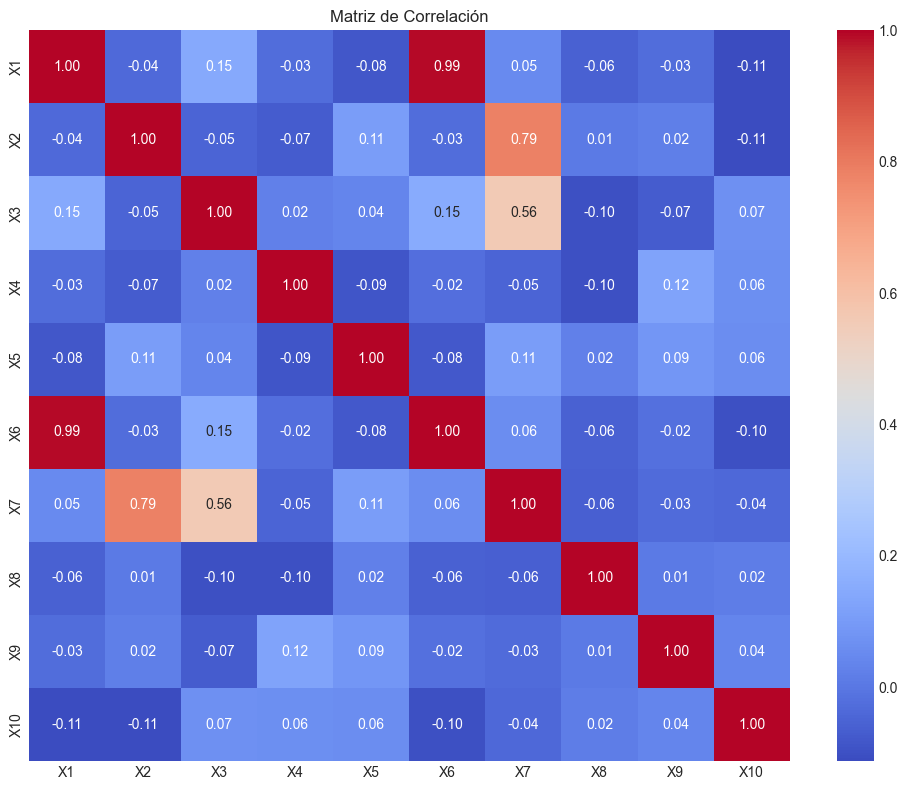
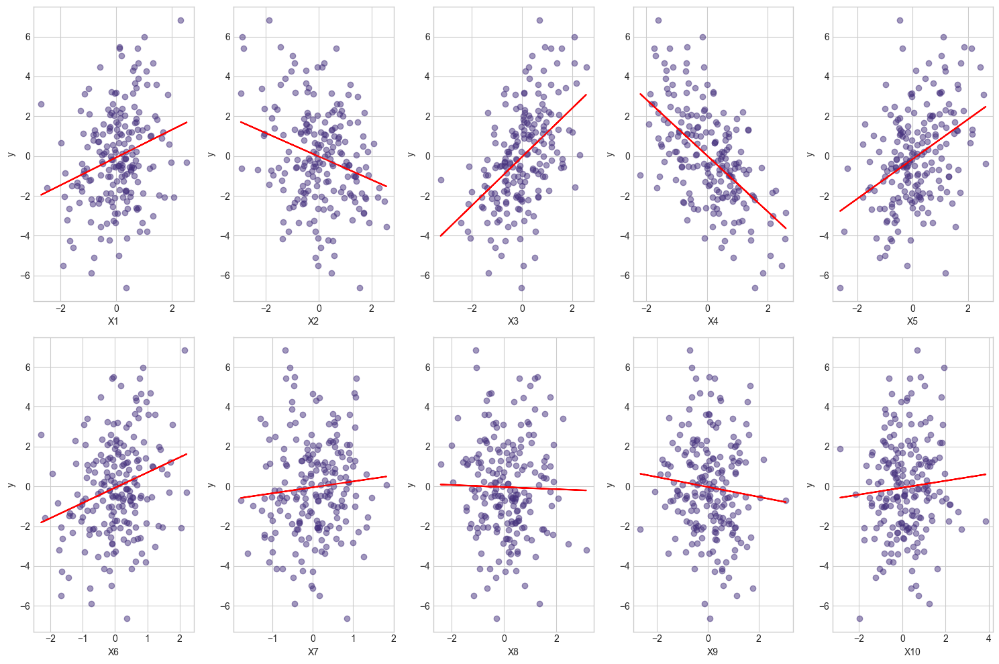
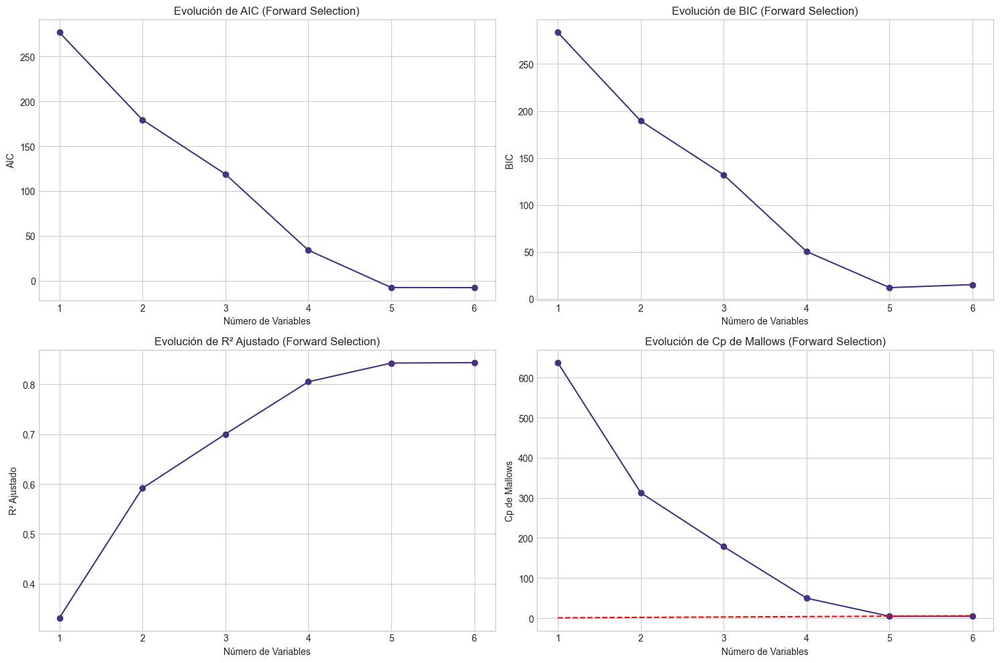
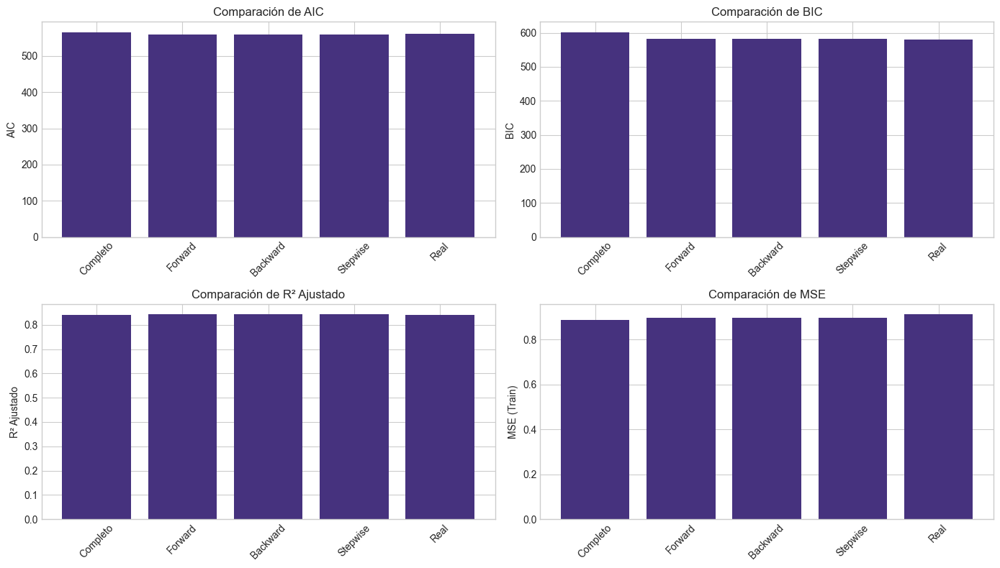
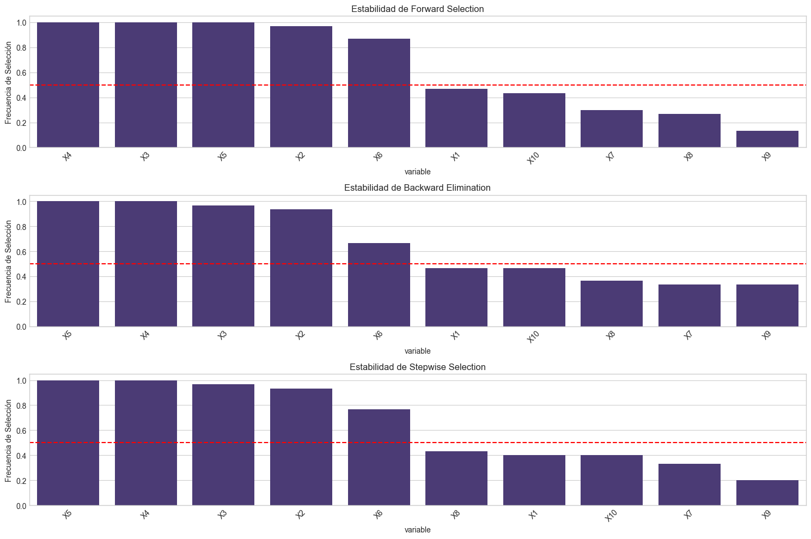
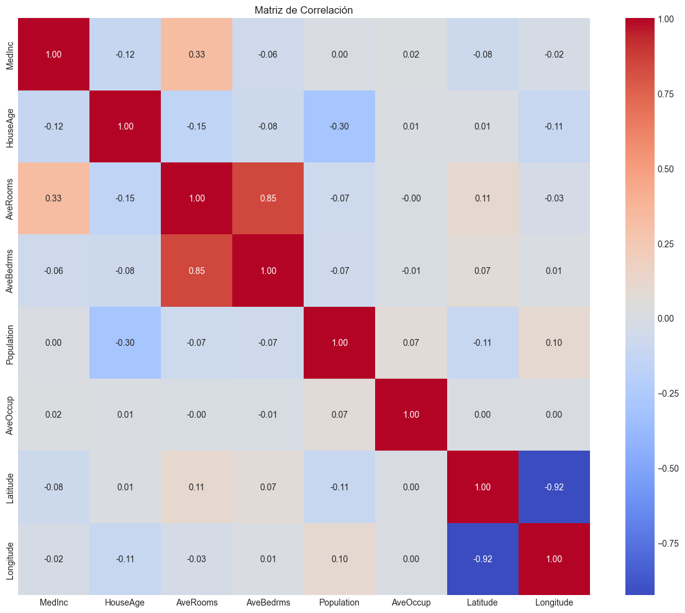
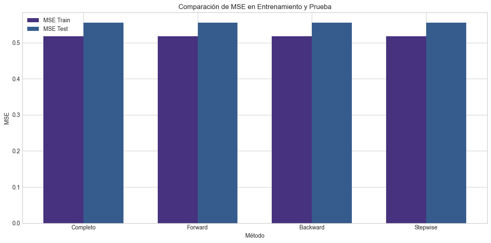
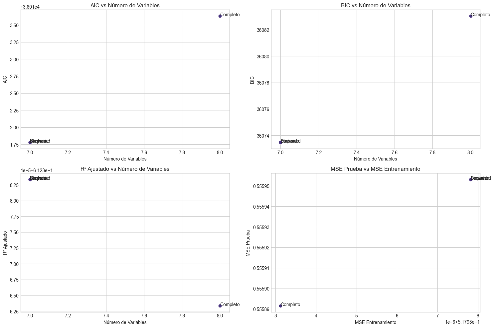

Taller 6: Selección de Variables en Modelos Lineales#
Descripción#
En este taller exploraremos técnicas para la selección de variables en modelos lineales. Aprenderemos a implementar métodos de selección stepwise desde cero, comprenderemos criterios de información como AIC, BIC y Cp de Mallows, y evaluaremos la estabilidad de los métodos de selección mediante técnicas de remuestreo.
Objetivos de Aprendizaje#
Implementar métodos de selección stepwise desde cero
Comprender e implementar criterios de información (AIC, BIC, Cp)
Evaluar la estabilidad de la selección mediante bootstrap
Desarrollar un flujo de trabajo sistemático para la selección de variables
Prerrequisitos#
Conocimiento de regresión lineal múltiple
Familiaridad con pruebas de hipótesis e intervalos de confianza
Comprensión del problema de multicolinealidad
Experiencia básica con técnicas de regularización
# Importación de librerías necesarias
import numpy as np
import pandas as pd
import matplotlib.pyplot as plt
import seaborn as sns
from scipy import stats
import statsmodels.api as sm
from statsmodels.regression.linear_model import OLS
from statsmodels.tools.tools import add_constant
from sklearn.model_selection import train_test_split
from sklearn.linear_model import LinearRegression
from sklearn.metrics import mean_squared_error, r2_score
from sklearn.preprocessing import StandardScaler
import itertools
from tqdm.notebook import tqdm
import warnings
warnings.filterwarnings('ignore')
# Configuración de visualización
plt.style.use('seaborn-v0_8-whitegrid')
plt.rcParams['figure.figsize'] = (12, 6)
sns.set_palette("viridis")
---------------------------------------------------------------------------
ModuleNotFoundError Traceback (most recent call last)
Cell In[1], line 16
14 from sklearn.preprocessing import StandardScaler
15 import itertools
---> 16 from tqdm.notebook import tqdm
17 import warnings
18 warnings.filterwarnings('ignore')
ModuleNotFoundError: No module named 'tqdm'
1. Fundamentos Teóricos de la Selección de Variables#
1.1 ¿Por qué seleccionar variables?#
En los talleres anteriores, hemos trabajado con modelos lineales donde incluíamos todas las variables predictoras disponibles. Sin embargo, en la práctica, incluir todas las variables no siempre es la mejor estrategia por varias razones:
Parsimonia: Los modelos más simples son más fáciles de interpretar y comunicar.
Reducción de la varianza: La inclusión de variables irrelevantes puede aumentar la varianza de las predicciones.
Multicolinealidad: Como vimos en los talleres 3 y 4, la multicolinealidad puede afectar la estabilidad e interpretación de los coeficientes.
Costo de recolección de datos: Reducir el número de variables puede disminuir el costo asociado a la recolección de datos.
Generalización: Los modelos más simples suelen generalizar mejor a nuevos datos.
El objetivo de la selección de variables es encontrar el subconjunto óptimo de predictores que:
Maximice la capacidad predictiva
Minimice el error de predicción
Mantenga la interpretabilidad del modelo
Evite el sobreajuste
1.2 Balance entre sesgo y varianza#
La selección de variables está directamente relacionada con el balance entre sesgo y varianza:
Modelos con pocas variables: Tienden a tener alto sesgo y baja varianza.
Modelos con muchas variables: Tienden a tener bajo sesgo pero alta varianza.
El modelo ideal es aquel que encuentra el equilibrio óptimo, minimizando el error total (suma de sesgo al cuadrado y varianza).
\(\text{Error total} = \text{Sesgo}^2 + \text{Varianza} + \text{Error irreducible}\)
1.3 Enfoques para la selección de variables#
Existen varios enfoques para la selección de variables:
Métodos basados en pruebas de hipótesis:
Evalúan la significancia estadística de cada variable.
Incluyen técnicas como Forward Selection, Backward Elimination y Stepwise Selection.
Métodos basados en criterios de información:
Cuantifican el equilibrio entre bondad de ajuste y complejidad del modelo.
Incluyen criterios como AIC, BIC y Cp de Mallows.
Métodos basados en regularización:
Penalizan la magnitud de los coeficientes (como vimos en el Taller 4).
Incluyen Lasso, Ridge y Elastic Net.
Métodos basados en la importancia de variables:
Cuantifican la contribución de cada variable al poder predictivo.
Incluyen medidas como la importancia de permutación.
En este taller nos centraremos principalmente en los dos primeros enfoques, implementándolos desde cero para entender su funcionamiento interno.
2. Criterios de Información#
Los criterios de información nos permiten comparar modelos con diferentes números de variables. Estos criterios buscan un equilibrio entre:
La bondad de ajuste del modelo (medida por la verosimilitud o RSS)
La complejidad del modelo (medida por el número de parámetros)
2.1 Akaike Information Criterion (AIC)#
El AIC es uno de los criterios más utilizados y se define como:
Donde:
\(L\) es la máxima verosimilitud del modelo
\(k\) es el número de parámetros (incluyendo el intercepto)
Para modelos lineales con errores normales, el AIC puede expresarse en términos de la suma de residuos al cuadrado (RSS):
Donde \(C\) es una constante que no afecta la comparación entre modelos y \(n\) es el número de observaciones.
Interpretación: Valores más bajos de AIC indican modelos preferibles. El AIC penaliza modelos con muchos parámetros.
2.2 Bayesian Information Criterion (BIC)#
El BIC es similar al AIC pero penaliza más fuertemente la complejidad del modelo:
Para modelos lineales con errores normales:
Interpretación: Al igual que con el AIC, valores más bajos de BIC indican modelos preferibles. El BIC penaliza la complejidad del modelo más severamente que el AIC cuando \(n > 7\).
2.3 Cp de Mallows#
El estadístico Cp de Mallows compara directamente la precisión predictiva de un modelo con \(p\) parámetros contra el modelo completo:
Donde:
\(RSS_p\) es la suma de residuos al cuadrado del modelo con \(p\) parámetros
\(\hat{\sigma}^2\) es una estimación de la varianza del error, generalmente obtenida del modelo completo
\(n\) es el número de observaciones
\(p\) es el número de parámetros (incluyendo el intercepto)
Interpretación: Se buscan modelos donde \(C_p \approx p\). Un valor de \(C_p\) significativamente mayor que \(p\) sugiere que el modelo tiene sesgo debido a la omisión de variables importantes.
2.4 R² Ajustado#
El R² ajustado modifica el R² regular para tener en cuenta el número de predictores:
Donde:
\(R^2\) es el coeficiente de determinación regular
\(n\) es el número de observaciones
\(p\) es el número de predictores (sin incluir el intercepto)
Interpretación: A diferencia del R² regular, el R² ajustado puede disminuir si se añaden variables que no mejoran sustancialmente el modelo. Se busca maximizar el R² ajustado.
2.5 Implementación de criterios de información#
# Implementación de criterios de información desde cero
def calcular_aic(y, y_pred, k):
"""
Calcula el Criterio de Información de Akaike (AIC).
Parámetros:
y: array, valores observados
y_pred: array, valores predichos
k: int, número de parámetros del modelo (incluyendo intercepto)
Retorna:
float: valor de AIC
"""
n = len(y)
rss = np.sum((y - y_pred)**2)
aic = n * np.log(rss/n) + 2*k
return aic
def calcular_bic(y, y_pred, k):
"""
Calcula el Criterio de Información Bayesiano (BIC).
Parámetros:
y: array, valores observados
y_pred: array, valores predichos
k: int, número de parámetros del modelo (incluyendo intercepto)
Retorna:
float: valor de BIC
"""
n = len(y)
rss = np.sum((y - y_pred)**2)
bic = n * np.log(rss/n) + k*np.log(n)
return bic
def calcular_cp_mallows(y, y_pred, k, sigma2=None):
"""
Calcula el Cp de Mallows.
Parámetros:
y: array, valores observados
y_pred: array, valores predichos
k: int, número de parámetros del modelo (incluyendo intercepto)
sigma2: float, estimación de la varianza del error (si None, se calcula del modelo completo)
Retorna:
float: valor de Cp de Mallows
"""
n = len(y)
rss = np.sum((y - y_pred)**2)
if sigma2 is None:
# Utilizamos MSE del modelo completo como estimación de sigma2
# Esto requiere que se haya ajustado previamente el modelo completo
raise ValueError("Se requiere una estimación de sigma2")
cp = rss/sigma2 - n + 2*k
return cp
def calcular_r2_ajustado(y, y_pred, k):
"""
Calcula el R2 ajustado.
Parámetros:
y: array, valores observados
y_pred: array, valores predichos
k: int, número de predictores (sin incluir intercepto)
Retorna:
float: valor de R2 ajustado
"""
n = len(y)
y_mean = np.mean(y)
# Suma total de cuadrados
tss = np.sum((y - y_mean)**2)
# Suma de residuos al cuadrado
rss = np.sum((y - y_pred)**2)
# R2 regular
r2 = 1 - (rss/tss)
# R2 ajustado
r2_adj = 1 - ((1-r2)*(n-1)/(n-k-1))
return r2_adj
# Función para evaluar todos los criterios de un modelo
def evaluar_modelo(X, y, columnas_seleccionadas, sigma2=None):
"""
Evalúa un modelo basado en varios criterios de información.
Parámetros:
X: DataFrame, predictores completos
y: array, variable respuesta
columnas_seleccionadas: list, nombres de las columnas a incluir en el modelo
sigma2: float, estimación de la varianza del error para Cp de Mallows
Retorna:
dict: diccionario con los valores de los criterios
"""
# Si no hay columnas seleccionadas, devuelve valores por defecto
if len(columnas_seleccionadas) == 0:
return {
'aic': np.inf,
'bic': np.inf,
'r2_adj': -np.inf,
'cp': np.inf if sigma2 else None
}
# Seleccionar variables
X_sel = X[columnas_seleccionadas].copy()
# Añadir constante
X_sel = sm.add_constant(X_sel)
# Ajustar modelo
modelo = sm.OLS(y, X_sel).fit()
# Obtener predicciones
y_pred = modelo.predict(X_sel)
# Calcular criterios
k = len(columnas_seleccionadas) + 1 # +1 por el intercepto
aic = calcular_aic(y, y_pred, k)
bic = calcular_bic(y, y_pred, k)
r2_adj = calcular_r2_ajustado(y, y_pred, len(columnas_seleccionadas))
# Calcular Cp si se proporciona sigma2
cp = calcular_cp_mallows(y, y_pred, k, sigma2) if sigma2 is not None else None
resultados = {
'aic': aic,
'bic': bic,
'r2_adj': r2_adj,
'cp': cp
}
return resultados
# Ejemplo de uso
# (Necesitaremos datos para probarlo, que definiremos más adelante)
3. Métodos de Selección de Variables Basados en Pruebas#
Ahora implementaremos tres métodos clásicos de selección de variables basados en pruebas de hipótesis:
3.1 Forward Selection (Selección hacia adelante)#
En la selección hacia adelante:
Se comienza con un modelo que no incluye ninguna variable predictora (solo intercepto).
Para cada variable no incluida en el modelo, se ajusta un modelo que la incluye junto con las variables ya seleccionadas.
Se selecciona la variable que produce la mayor mejora según algún criterio (p-valor, AIC, etc.).
Se repite el proceso hasta que ninguna variable adicional mejore el modelo o se cumpla algún criterio de parada.
3.2 Backward Elimination (Eliminación hacia atrás)#
En la eliminación hacia atrás:
Se comienza con un modelo que incluye todas las variables predictoras.
Se evalúa la contribución de cada variable al modelo.
Se elimina la variable menos significativa según algún criterio.
Se repite el proceso hasta que todas las variables restantes sean significativas o se cumpla algún criterio de parada.
3.3 Stepwise Selection (Selección por pasos)#
La selección por pasos es una combinación de los dos métodos anteriores:
Generalmente comienza como la selección hacia adelante.
Después de añadir una variable, se evalúa si alguna de las variables previamente incluidas debería eliminarse.
Este proceso de adición y eliminación continúa hasta que el modelo se estabiliza.
3.4 Implementación de algoritmos de selección#
# Implementación de algoritmos de selección desde cero
def forward_selection(X, y, criterio='aic', umbral_p=0.05, mostrar_progreso=True):
"""
Realiza la selección hacia adelante basada en el criterio especificado.
Parámetros:
X: DataFrame, predictores
y: array, variable respuesta
criterio: str, 'aic', 'bic', 'r2_adj' o 'pvalue'
umbral_p: float, umbral para considerar una variable significativa
mostrar_progreso: bool, si se muestra una barra de progreso
Retorna:
list: lista de variables seleccionadas
dict: historial de selección con criterios
"""
# Lista de todas las columnas disponibles
todas_columnas = list(X.columns)
# Inicializamos con ninguna variable seleccionada
seleccionadas = []
candidatas = todas_columnas.copy()
# Para Cp de Mallows, necesitamos sigma2 del modelo completo
X_completo = sm.add_constant(X)
modelo_completo = sm.OLS(y, X_completo).fit()
sigma2 = modelo_completo.mse_resid
# Diccionario para almacenar la historia de selección
historial = {'variables': [], 'criterio': [], 'valores': {}}
# Iteramos hasta que no queden variables para añadir o no mejore el criterio
iteracion = 0
mejora = True
if mostrar_progreso:
pbar = tqdm(total=len(todas_columnas), desc="Forward Selection")
while candidatas and mejora:
iteracion += 1
mejor_valor = float('inf') if criterio in ['aic', 'bic'] else float('-inf') if criterio in ['r2_adj'] else float('-inf')
mejor_variable = None
resultados_mejor = {}
# Para cada variable candidata, evaluamos el modelo con las ya seleccionadas + esta nueva
for var in candidatas:
vars_a_probar = seleccionadas + [var]
# Si utilizamos p-valor
if criterio == 'pvalue':
X_sel = X[vars_a_probar].copy()
X_sel = sm.add_constant(X_sel)
modelo = sm.OLS(y, X_sel).fit()
p_valor = modelo.pvalues[var] # p-valor de la nueva variable
if p_valor < umbral_p and p_valor < mejor_valor:
mejor_valor = p_valor
mejor_variable = var
resultados_mejor = {'pvalue': p_valor}
else:
# Evaluamos con criterios de información
resultados = evaluar_modelo(X, y, vars_a_probar, sigma2)
if (criterio in ['aic', 'bic'] and resultados[criterio] < mejor_valor) or \
(criterio == 'r2_adj' and resultados[criterio] > mejor_valor):
mejor_valor = resultados[criterio]
mejor_variable = var
resultados_mejor = resultados
# Verificamos si hubo mejora
if mejor_variable is not None:
# Comparamos con el modelo actual
if seleccionadas:
actual_resultados = evaluar_modelo(X, y, seleccionadas, sigma2)
# Verificamos si hay mejora según el criterio
if (criterio in ['aic', 'bic'] and mejor_valor >= actual_resultados[criterio]) or \
(criterio == 'r2_adj' and mejor_valor <= actual_resultados[criterio]):
mejora = False
# Si hay mejora, añadimos la variable
if mejora:
seleccionadas.append(mejor_variable)
candidatas.remove(mejor_variable)
# Guardamos en el historial
historial['variables'].append(seleccionadas.copy())
historial['criterio'].append(mejor_valor)
for clave, valor in resultados_mejor.items():
historial['valores'].setdefault(clave, []).append(valor)
if mostrar_progreso:
pbar.update(1)
pbar.set_description(f"Forward Selection: {len(seleccionadas)} variables, {criterio}={mejor_valor:.4f}")
else:
mejora = False
if mostrar_progreso:
pbar.close()
return seleccionadas, historial
def backward_elimination(X, y, criterio='aic', umbral_p=0.05, mostrar_progreso=True):
"""
Realiza la eliminación hacia atrás basada en el criterio especificado.
Parámetros:
X: DataFrame, predictores
y: array, variable respuesta
criterio: str, 'aic', 'bic', 'r2_adj' o 'pvalue'
umbral_p: float, umbral para considerar una variable significativa
mostrar_progreso: bool, si se muestra una barra de progreso
Retorna:
list: lista de variables seleccionadas
dict: historial de selección con criterios
"""
# Lista de todas las columnas disponibles
todas_columnas = list(X.columns)
# Inicializamos con todas las variables
seleccionadas = todas_columnas.copy()
# Para Cp de Mallows, necesitamos sigma2 del modelo completo
X_completo = sm.add_constant(X)
modelo_completo = sm.OLS(y, X_completo).fit()
sigma2 = modelo_completo.mse_resid
# Evaluamos el modelo inicial
resultados_inicial = evaluar_modelo(X, y, seleccionadas, sigma2)
mejor_valor_actual = resultados_inicial[criterio] if criterio in ['aic', 'bic', 'r2_adj'] else None
# Diccionario para almacenar la historia de selección
historial = {'variables': [seleccionadas.copy()],
'criterio': [mejor_valor_actual if criterio in ['aic', 'bic', 'r2_adj'] else None],
'valores': {k: [v] for k, v in resultados_inicial.items()}}
if mostrar_progreso:
pbar = tqdm(total=len(todas_columnas), desc="Backward Elimination")
# Iteramos hasta que no se puedan eliminar más variables
iteracion = 0
mejora = True
while len(seleccionadas) > 0 and mejora:
iteracion += 1
mejor_valor = float('inf') if criterio in ['aic', 'bic'] else float('-inf') if criterio in ['r2_adj'] else float('inf')
peor_variable = None
resultados_mejor = {}
# Para cada variable actualmente seleccionada, evaluamos el modelo sin ella
for var in seleccionadas:
vars_a_probar = [v for v in seleccionadas if v != var]
# Si no quedan variables, no podemos evaluar más
if not vars_a_probar:
break
# Si utilizamos p-valor
if criterio == 'pvalue':
# Ajustamos el modelo completo para obtener p-valores
X_sel = X[seleccionadas].copy()
X_sel = sm.add_constant(X_sel)
modelo = sm.OLS(y, X_sel).fit()
# Identificamos la variable menos significativa
p_valores = modelo.pvalues.drop('const')
max_p_valor = p_valores.max()
var_max_p = p_valores.idxmax()
if max_p_valor > umbral_p and max_p_valor > mejor_valor:
mejor_valor = max_p_valor
peor_variable = var_max_p
resultados_mejor = {'pvalue': max_p_valor}
# Salimos del bucle ya que ya identificamos la peor variable
break
else:
# Evaluamos con criterios de información
resultados = evaluar_modelo(X, y, vars_a_probar, sigma2)
# Para AIC y BIC, buscamos minimizar; para R2 ajustado, maximizar
if (criterio in ['aic', 'bic'] and resultados[criterio] < mejor_valor) or \
(criterio == 'r2_adj' and resultados[criterio] > mejor_valor):
mejor_valor = resultados[criterio]
peor_variable = var
resultados_mejor = resultados
# Verificamos si eliminar la variable mejora el criterio
if peor_variable is not None:
if criterio == 'pvalue':
if mejor_valor > umbral_p:
seleccionadas.remove(peor_variable)
# Actualizamos historial
resultados = evaluar_modelo(X, y, seleccionadas, sigma2)
historial['variables'].append(seleccionadas.copy())
historial['criterio'].append(mejor_valor)
for clave, valor in resultados.items():
historial['valores'].setdefault(clave, []).append(valor)
if mostrar_progreso:
pbar.update(1)
pbar.set_description(f"Backward Elimination: {len(seleccionadas)} variables, max p-value={mejor_valor:.4f}")
else:
mejora = False
else:
# Comparamos con el mejor valor actual
if (criterio in ['aic', 'bic'] and mejor_valor < mejor_valor_actual) or \
(criterio == 'r2_adj' and mejor_valor > mejor_valor_actual):
seleccionadas.remove(peor_variable)
mejor_valor_actual = mejor_valor
# Actualizamos historial
historial['variables'].append(seleccionadas.copy())
historial['criterio'].append(mejor_valor)
for clave, valor in resultados_mejor.items():
historial['valores'].setdefault(clave, []).append(valor)
if mostrar_progreso:
pbar.update(1)
pbar.set_description(f"Backward Elimination: {len(seleccionadas)} variables, {criterio}={mejor_valor:.4f}")
else:
mejora = False
else:
mejora = False
if mostrar_progreso:
pbar.close()
return seleccionadas, historial
def stepwise_selection(X, y, criterio='aic', umbral_p_entrada=0.05, umbral_p_salida=0.10, mostrar_progreso=True):
"""
Realiza la selección stepwise basada en el criterio especificado.
Parámetros:
X: DataFrame, predictores
y: array, variable respuesta
criterio: str, 'aic', 'bic', 'r2_adj' o 'pvalue'
umbral_p_entrada: float, umbral para considerar una variable para entrar
umbral_p_salida: float, umbral para considerar una variable para salir
mostrar_progreso: bool, si se muestra una barra de progreso
Retorna:
list: lista de variables seleccionadas
dict: historial de selección con criterios
"""
# Lista de todas las columnas disponibles
todas_columnas = list(X.columns)
# Inicializamos con ninguna variable seleccionada
seleccionadas = []
candidatas = todas_columnas.copy()
# Para Cp de Mallows, necesitamos sigma2 del modelo completo
X_completo = sm.add_constant(X)
modelo_completo = sm.OLS(y, X_completo).fit()
sigma2 = modelo_completo.mse_resid
# Diccionario para almacenar la historia de selección
historial = {'variables': [], 'accion': [], 'criterio': [], 'valores': {}}
# Iteramos hasta que no se puedan añadir ni eliminar más variables
iteracion = 0
cambio = True
if mostrar_progreso:
pbar = tqdm(total=len(todas_columnas), desc="Stepwise Selection")
while cambio:
iteracion += 1
cambio = False
# Paso 1: Forward step - intentamos añadir una variable
mejor_valor_forward = float('inf') if criterio in ['aic', 'bic'] else float('-inf') if criterio in ['r2_adj'] else float('inf')
mejor_variable_forward = None
resultados_mejor_forward = {}
for var in candidatas:
vars_a_probar = seleccionadas + [var]
# Si utilizamos p-valor
if criterio == 'pvalue':
X_sel = X[vars_a_probar].copy()
X_sel = sm.add_constant(X_sel)
modelo = sm.OLS(y, X_sel).fit()
p_valor = modelo.pvalues[var] # p-valor de la nueva variable
if p_valor < umbral_p_entrada and p_valor < mejor_valor_forward:
mejor_valor_forward = p_valor
mejor_variable_forward = var
resultados_mejor_forward = {'pvalue': p_valor}
else:
# Evaluamos con criterios de información
resultados = evaluar_modelo(X, y, vars_a_probar, sigma2)
if (criterio in ['aic', 'bic'] and resultados[criterio] < mejor_valor_forward) or \
(criterio == 'r2_adj' and resultados[criterio] > mejor_valor_forward):
mejor_valor_forward = resultados[criterio]
mejor_variable_forward = var
resultados_mejor_forward = resultados
# Verificamos si añadir la variable mejora el criterio
if mejor_variable_forward is not None:
# Comparamos con el modelo actual
actual_resultados = evaluar_modelo(X, y, seleccionadas, sigma2) if seleccionadas else {'aic': float('inf'), 'bic': float('inf'), 'r2_adj': float('-inf')}
# Verificamos si hay mejora según el criterio
mejora_forward = False
if criterio == 'pvalue':
mejora_forward = mejor_valor_forward < umbral_p_entrada
else:
if criterio in ['aic', 'bic']:
mejora_forward = mejor_valor_forward < actual_resultados[criterio]
elif criterio == 'r2_adj':
mejora_forward = mejor_valor_forward > actual_resultados[criterio]
if mejora_forward:
seleccionadas.append(mejor_variable_forward)
candidatas.remove(mejor_variable_forward)
cambio = True
# Guardamos en el historial
historial['variables'].append(seleccionadas.copy())
historial['accion'].append('añadir')
historial['criterio'].append(mejor_valor_forward)
for clave, valor in resultados_mejor_forward.items():
historial['valores'].setdefault(clave, []).append(valor)
if mostrar_progreso:
pbar.update(0.5)
pbar.set_description(f"Stepwise: +{mejor_variable_forward}, {len(seleccionadas)} vars, {criterio}={mejor_valor_forward:.4f}")
# Paso 2: Backward step - intentamos eliminar una variable (solo si hay variables seleccionadas)
if seleccionadas:
mejor_valor_backward = float('inf') if criterio in ['aic', 'bic'] else float('-inf') if criterio in ['r2_adj'] else float('inf')
peor_variable = None
resultados_mejor_backward = {}
# Para cada variable actualmente seleccionada, evaluamos el modelo sin ella
for var in seleccionadas:
vars_a_probar = [v for v in seleccionadas if v != var]
# Si no quedan variables, no podemos evaluar más
if not vars_a_probar:
continue
# Si utilizamos p-valor
if criterio == 'pvalue':
# Ajustamos el modelo completo para obtener p-valores
X_sel = X[seleccionadas].copy()
X_sel = sm.add_constant(X_sel)
modelo = sm.OLS(y, X_sel).fit()
# Verificamos el p-valor de esta variable
p_valor = modelo.pvalues.get(var, 0)
if p_valor > umbral_p_salida and p_valor > mejor_valor_backward:
mejor_valor_backward = p_valor
peor_variable = var
resultados_mejor_backward = {'pvalue': p_valor}
else:
# Evaluamos con criterios de información
resultados = evaluar_modelo(X, y, vars_a_probar, sigma2)
# Para AIC y BIC, buscamos minimizar; para R2 ajustado, maximizar
if (criterio in ['aic', 'bic'] and resultados[criterio] < mejor_valor_backward) or \
(criterio == 'r2_adj' and resultados[criterio] > mejor_valor_backward):
mejor_valor_backward = resultados[criterio]
peor_variable = var
resultados_mejor_backward = resultados
# Verificamos si eliminar la variable mejora el criterio
if peor_variable is not None:
actual_resultados = evaluar_modelo(X, y, seleccionadas, sigma2)
mejora_backward = False
if criterio == 'pvalue':
mejora_backward = mejor_valor_backward > umbral_p_salida
else:
if criterio in ['aic', 'bic']:
mejora_backward = mejor_valor_backward < actual_resultados[criterio]
elif criterio == 'r2_adj':
mejora_backward = mejor_valor_backward > actual_resultados[criterio]
if mejora_backward:
seleccionadas.remove(peor_variable)
candidatas.append(peor_variable)
cambio = True
# Actualizamos historial
historial['variables'].append(seleccionadas.copy())
historial['accion'].append('eliminar')
historial['criterio'].append(mejor_valor_backward)
for clave, valor in resultados_mejor_backward.items():
historial['valores'].setdefault(clave, []).append(valor)
if mostrar_progreso:
pbar.update(0.5)
pbar.set_description(f"Stepwise: -{peor_variable}, {len(seleccionadas)} vars, {criterio}={mejor_valor_backward:.4f}")
if mostrar_progreso:
pbar.close()
return seleccionadas, historial
def todos_subconjuntos(X, y, max_vars=None, mostrar_progreso=True):
"""
Evalúa todos los posibles subconjuntos de variables.
¡ADVERTENCIA: Este método es computacionalmente intensivo!
Parámetros:
X: DataFrame, predictores
y: array, variable respuesta
max_vars: int, número máximo de variables a considerar
mostrar_progreso: bool, si se muestra una barra de progreso
Retorna:
DataFrame: resultados ordenados por AIC
"""
# Lista de todas las columnas disponibles
todas_columnas = list(X.columns)
# Limitar el número de variables si es necesario
if max_vars is not None and max_vars < len(todas_columnas):
print(f"Limitando a {max_vars} variables de {len(todas_columnas)} disponibles.")
todas_columnas = todas_columnas[:max_vars]
# Para Cp de Mallows, necesitamos sigma2 del modelo completo
X_completo = sm.add_constant(X)
modelo_completo = sm.OLS(y, X_completo).fit()
sigma2 = modelo_completo.mse_resid
# Generamos todos los posibles subconjuntos
resultados = []
# Calculamos el número total de combinaciones
total_combinaciones = sum(1 for k in range(len(todas_columnas) + 1)
for _ in itertools.combinations(todas_columnas, k))
if mostrar_progreso:
pbar = tqdm(total=total_combinaciones, desc="Evaluando subconjuntos")
# Evaluamos cada subconjunto, incluyendo el modelo vacío
for k in range(len(todas_columnas) + 1):
for subset in itertools.combinations(todas_columnas, k):
subset_list = list(subset)
# Evaluamos el modelo
criterios = evaluar_modelo(X, y, subset_list, sigma2)
# Guardamos los resultados
resultado = {
'variables': subset_list,
'num_vars': len(subset_list),
'aic': criterios['aic'],
'bic': criterios['bic'],
'r2_adj': criterios['r2_adj'],
'cp': criterios['cp']
}
resultados.append(resultado)
if mostrar_progreso:
pbar.update(1)
if mostrar_progreso:
pbar.close()
# Convertimos a DataFrame
resultados_df = pd.DataFrame(resultados)
# Ordenamos por AIC (ascendente)
resultados_df = resultados_df.sort_values('aic')
return resultados_df
4. Ejemplos de Selección de Variables#
4.1 Ejemplo con Datos Simulados#
Vamos a generar un conjunto de datos simulados para ilustrar los métodos de selección de variables. Crearemos un dataset con algunas variables verdaderamente relacionadas con la respuesta y otras que son ruido.
# Generación de datos simulados
# Fijamos semilla para reproducibilidad
np.random.seed(42)
# Número de observaciones
n = 200
# Número de predictores (5 relevantes, 5 irrelevantes)
p_relevantes = 5
p_irrelevantes = 5
p_total = p_relevantes + p_irrelevantes
# Generamos los predictores
X = np.random.normal(0, 1, size=(n, p_total))
X_df = pd.DataFrame(X, columns=[f'X{i+1}' for i in range(p_total)])
# Generamos la respuesta (solo relacionada con las primeras 5 variables)
beta_real = np.zeros(p_total)
beta_real[:p_relevantes] = [0.5, -0.8, 1.2, -1.5, 0.9] # Coeficientes para variables relevantes
# Calculamos la respuesta con un término de error
y = X_df.iloc[:, :p_relevantes].values @ beta_real[:p_relevantes] + np.random.normal(0, 1, size=n)
# Añadimos multicolinealidad entre X1 y X6
X_df['X6'] = 0.9 * X_df['X1'] + 0.1 * np.random.normal(0, 1, size=n)
# Añadimos multicolinealidad entre X2, X3 y X7
X_df['X7'] = 0.5 * X_df['X2'] + 0.4 * X_df['X3'] + 0.1 * np.random.normal(0, 1, size=n)
# Mostramos los primeros registros del dataset
print("Primeros 5 registros del dataset simulado:")
print(X_df.head())
# Visualizamos correlaciones
plt.figure(figsize=(10, 8))
sns.heatmap(X_df.corr(), annot=True, cmap='coolwarm', fmt='.2f')
plt.title('Matriz de Correlación')
plt.tight_layout()
plt.show()
# Visualizamos la relación de cada variable con y
plt.figure(figsize=(15, 10))
for i, col in enumerate(X_df.columns):
plt.subplot(2, 5, i+1)
plt.scatter(X_df[col], y, alpha=0.5)
plt.xlabel(col)
plt.ylabel('y')
# Añadimos una línea de regresión
m, b = np.polyfit(X_df[col], y, 1)
plt.plot(X_df[col], m*X_df[col] + b, color='red')
plt.tight_layout()
plt.show()
# Mostramos los coeficientes reales
print("\nCoeficientes reales:")
for i, b in enumerate(beta_real):
print(f"X{i+1}: {b:.2f}")
# Ajustamos el modelo completo
X_completo = sm.add_constant(X_df)
modelo_completo = sm.OLS(y, X_completo).fit()
# Mostramos el resumen
print("\nResumen del modelo completo:")
print(modelo_completo.summary())
Primeros 5 registros del dataset simulado:
X1 X2 X3 X4 X5 X6 X7 \
0 0.496714 -0.138264 0.647689 1.523030 -0.234153 0.627478 0.117770
1 -0.463418 -0.465730 0.241962 -1.913280 -1.724918 -0.436166 -0.118398
2 1.465649 -0.225776 0.067528 -1.424748 -0.544383 1.391060 -0.140545
3 -0.601707 1.852278 -0.013497 -1.057711 0.822545 -0.670863 0.893575
4 0.738467 0.171368 -0.115648 -0.301104 -1.478522 0.568976 0.206770
X8 X9 X10
0 0.767435 -0.469474 0.542560
1 0.314247 -0.908024 -1.412304
2 0.375698 -0.600639 -0.291694
3 -1.959670 -1.328186 0.196861
4 1.057122 0.343618 -1.763040


Coeficientes reales:
X1: 0.50
X2: -0.80
X3: 1.20
X4: -1.50
X5: 0.90
X6: 0.00
X7: 0.00
X8: 0.00
X9: 0.00
X10: 0.00
Resumen del modelo completo:
OLS Regression Results
==============================================================================
Dep. Variable: y R-squared: 0.849
Model: OLS Adj. R-squared: 0.841
Method: Least Squares F-statistic: 106.5
Date: Wed, 02 Apr 2025 Prob (F-statistic): 4.28e-72
Time: 12:39:33 Log-Likelihood: -271.91
No. Observations: 200 AIC: 565.8
Df Residuals: 189 BIC: 602.1
Df Model: 10
Covariance Type: nonrobust
==============================================================================
coef std err t P>|t| [0.025 0.975]
------------------------------------------------------------------------------
const -0.0874 0.071 -1.235 0.218 -0.227 0.052
X1 -0.2843 0.661 -0.430 0.667 -1.588 1.019
X2 -0.8846 0.352 -2.516 0.013 -1.578 -0.191
X3 0.9372 0.294 3.192 0.002 0.358 1.516
X4 -1.4038 0.070 -19.981 0.000 -1.542 -1.265
X5 0.9495 0.072 13.220 0.000 0.808 1.091
X6 0.9050 0.723 1.252 0.212 -0.521 2.331
X7 0.3708 0.696 0.533 0.595 -1.002 1.744
X8 -0.0781 0.074 -1.050 0.295 -0.225 0.069
X9 -0.0342 0.077 -0.443 0.658 -0.186 0.118
X10 0.0962 0.070 1.371 0.172 -0.042 0.235
==============================================================================
Omnibus: 0.427 Durbin-Watson: 2.027
Prob(Omnibus): 0.808 Jarque-Bera (JB): 0.263
Skew: -0.083 Prob(JB): 0.877
Kurtosis: 3.064 Cond. No. 18.5
==============================================================================
Notes:
[1] Standard Errors assume that the covariance matrix of the errors is correctly specified.
# Aplicación de métodos de selección a los datos simulados
# 1. Forward Selection
print("\n===== FORWARD SELECTION =====")
variables_forward, historial_forward = forward_selection(X_df, y, criterio='aic')
print(f"Variables seleccionadas (Forward): {variables_forward}")
# 2. Backward Elimination
print("\n===== BACKWARD ELIMINATION =====")
variables_backward, historial_backward = backward_elimination(X_df, y, criterio='aic')
print(f"Variables seleccionadas (Backward): {variables_backward}")
# 3. Stepwise Selection
print("\n===== STEPWISE SELECTION =====")
variables_stepwise, historial_stepwise = stepwise_selection(X_df, y, criterio='aic')
print(f"Variables seleccionadas (Stepwise): {variables_stepwise}")
# 4. Todos los subconjuntos (limitado a 8 variables para evitar explosión combinatoria)
print("\n===== TODOS LOS SUBCONJUNTOS =====")
max_vars = 8 # Limitamos para manejar la complejidad computacional
resultados_subconjuntos = todos_subconjuntos(X_df.iloc[:, :max_vars], y, max_vars=max_vars)
print("\nMejores 5 modelos según AIC:")
print(resultados_subconjuntos.head())
# Visualizamos la evolución de los criterios en Forward Selection
plt.figure(figsize=(15, 10))
# AIC
plt.subplot(2, 2, 1)
plt.plot(range(1, len(historial_forward['valores']['aic'])+1), historial_forward['valores']['aic'], marker='o')
plt.xlabel('Número de Variables')
plt.ylabel('AIC')
plt.title('Evolución de AIC (Forward Selection)')
plt.grid(True)
# BIC
plt.subplot(2, 2, 2)
plt.plot(range(1, len(historial_forward['valores']['bic'])+1), historial_forward['valores']['bic'], marker='o')
plt.xlabel('Número de Variables')
plt.ylabel('BIC')
plt.title('Evolución de BIC (Forward Selection)')
plt.grid(True)
# R² Ajustado
plt.subplot(2, 2, 3)
plt.plot(range(1, len(historial_forward['valores']['r2_adj'])+1), historial_forward['valores']['r2_adj'], marker='o')
plt.xlabel('Número de Variables')
plt.ylabel('R² Ajustado')
plt.title('Evolución de R² Ajustado (Forward Selection)')
plt.grid(True)
# Cp de Mallows
if 'cp' in historial_forward['valores'] and historial_forward['valores']['cp'][0] is not None:
plt.subplot(2, 2, 4)
plt.plot(range(1, len(historial_forward['valores']['cp'])+1), historial_forward['valores']['cp'], marker='o')
# Línea de referencia y=x
plt.plot(range(1, len(historial_forward['valores']['cp'])+1), range(1, len(historial_forward['valores']['cp'])+1), 'r--')
plt.xlabel('Número de Variables')
plt.ylabel('Cp de Mallows')
plt.title('Evolución de Cp de Mallows (Forward Selection)')
plt.grid(True)
plt.tight_layout()
plt.show()
# Comparamos los diferentes métodos
# Ajustamos modelos con las variables seleccionadas
modelos = {
'Completo': list(X_df.columns),
'Forward': variables_forward,
'Backward': variables_backward,
'Stepwise': variables_stepwise,
'Real': [f'X{i+1}' for i in range(p_relevantes)]
}
resultados_comparacion = {}
for nombre, variables in modelos.items():
if not variables: # Si no hay variables seleccionadas
resultados_comparacion[nombre] = {
'variables': [],
'num_vars': 0,
'aic': np.inf,
'bic': np.inf,
'r2_adj': -np.inf,
'mse_train': np.inf
}
continue
# Preparamos los datos
X_sel = X_df[variables].copy()
X_sel = sm.add_constant(X_sel)
# Ajustamos el modelo
modelo = sm.OLS(y, X_sel).fit()
# Calculamos métricas
y_pred = modelo.predict(X_sel)
mse = mean_squared_error(y, y_pred)
# Guardamos resultados
resultados_comparacion[nombre] = {
'variables': variables,
'num_vars': len(variables),
'aic': modelo.aic,
'bic': modelo.bic,
'r2_adj': modelo.rsquared_adj,
'mse_train': mse
}
# Mostramos la comparación en un DataFrame
comparacion_df = pd.DataFrame(resultados_comparacion).T
print("\nComparación de Métodos:")
print(comparacion_df[['num_vars', 'aic', 'bic', 'r2_adj', 'mse_train']])
# Visualizamos la comparación
plt.figure(figsize=(14, 8))
# AIC
plt.subplot(2, 2, 1)
plt.bar(comparacion_df.index, comparacion_df['aic'])
plt.ylabel('AIC')
plt.title('Comparación de AIC')
plt.xticks(rotation=45)
# BIC
plt.subplot(2, 2, 2)
plt.bar(comparacion_df.index, comparacion_df['bic'])
plt.ylabel('BIC')
plt.title('Comparación de BIC')
plt.xticks(rotation=45)
# R² Ajustado
plt.subplot(2, 2, 3)
plt.bar(comparacion_df.index, comparacion_df['r2_adj'])
plt.ylabel('R² Ajustado')
plt.title('Comparación de R² Ajustado')
plt.xticks(rotation=45)
# MSE
plt.subplot(2, 2, 4)
plt.bar(comparacion_df.index, comparacion_df['mse_train'])
plt.ylabel('MSE (Train)')
plt.title('Comparación de MSE')
plt.xticks(rotation=45)
plt.tight_layout()
plt.show()
===== FORWARD SELECTION =====
Variables seleccionadas (Forward): ['X4', 'X3', 'X5', 'X2', 'X6', 'X10']
===== BACKWARD ELIMINATION =====
Variables seleccionadas (Backward): ['X2', 'X3', 'X4', 'X5', 'X6', 'X10']
===== STEPWISE SELECTION =====
Variables seleccionadas (Stepwise): ['X4', 'X3', 'X5', 'X2', 'X6', 'X10']
===== TODOS LOS SUBCONJUNTOS =====
Mejores 5 modelos según AIC:
variables num_vars aic bic r2_adj \
198 [X2, X3, X4, X5, X6] 5 -7.801821 11.988084 0.842274
241 [X2, X3, X4, X5, X6, X8] 6 -6.934152 16.154069 0.842352
163 [X1, X2, X3, X4, X5] 5 -6.273888 13.516016 0.841065
240 [X2, X3, X4, X5, X6, X7] 6 -6.194409 16.893813 0.841768
219 [X1, X2, X3, X4, X5, X6] 6 -6.059778 17.028444 0.841661
cp
198 4.735264
241 5.647146
163 6.213336
240 6.357308
219 6.486837

Comparación de Métodos:
num_vars aic bic r2_adj mse_train
Completo 10 565.813356 602.094847 0.841276 0.887976
Forward 6 559.680796 582.769018 0.843107 0.896306
Backward 6 559.680796 582.769018 0.843107 0.896306
Stepwise 6 559.680796 582.769018 0.843107 0.896306
Real 5 561.301525 581.09143 0.841065 0.91268

5. Estabilidad de la Selección de Variables#
Un aspecto importante de la selección de variables es evaluar su estabilidad. Idealmente, un método de selección debería seleccionar las mismas variables incluso con pequeños cambios en los datos.
Utilizaremos bootstrap para evaluar la estabilidad de la selección de variables:
Generaremos múltiples muestras bootstrap de nuestros datos
Aplicaremos los métodos de selección a cada muestra
Calcularemos la frecuencia con la que cada variable es seleccionada
# Implementación del análisis de estabilidad mediante bootstrap
def evaluar_estabilidad(X, y, metodo, num_bootstrap=100, **kwargs):
"""
Evalúa la estabilidad de un método de selección de variables mediante bootstrap.
Parámetros:
X: DataFrame, predictores
y: array, variable respuesta
metodo: función que implementa el método de selección
num_bootstrap: int, número de repeticiones bootstrap
**kwargs: argumentos adicionales para el método de selección
Retorna:
DataFrame: frecuencias de selección de variables
"""
todas_columnas = list(X.columns)
n = len(y)
# Inicializamos contador de selección
seleccion_count = {col: 0 for col in todas_columnas}
# Realizamos bootstrap
for i in tqdm(range(num_bootstrap), desc=f"Evaluando estabilidad"):
# Generamos índices bootstrap
indices = np.random.choice(n, n, replace=True)
# Creamos muestra bootstrap
X_boot = X.iloc[indices].reset_index(drop=True)
y_boot = y[indices]
# Aplicamos el método de selección
variables_seleccionadas, _ = metodo(X_boot, y_boot, mostrar_progreso=False, **kwargs)
# Actualizamos contadores
for var in variables_seleccionadas:
seleccion_count[var] += 1
# Convertimos a frecuencias relativas
seleccion_freq = {col: count/num_bootstrap for col, count in seleccion_count.items()}
# Convertimos a DataFrame y ordenamos
frecuencias_df = pd.DataFrame({
'variable': list(seleccion_freq.keys()),
'frecuencia': list(seleccion_freq.values())
})
frecuencias_df = frecuencias_df.sort_values('frecuencia', ascending=False)
return frecuencias_df
# Número de repeticiones bootstrap (reducido para evitar tiempos de ejecución largos)
num_bootstrap = 30
# Evaluamos la estabilidad de cada método
print("\n===== ESTABILIDAD MEDIANTE BOOTSTRAP =====")
print("\nEvaluando estabilidad de Forward Selection...")
estabilidad_forward = evaluar_estabilidad(X_df, y, forward_selection, num_bootstrap=num_bootstrap, criterio='aic')
print("\nEvaluando estabilidad de Backward Elimination...")
estabilidad_backward = evaluar_estabilidad(X_df, y, backward_elimination, num_bootstrap=num_bootstrap, criterio='aic')
print("\nEvaluando estabilidad de Stepwise Selection...")
estabilidad_stepwise = evaluar_estabilidad(X_df, y, stepwise_selection, num_bootstrap=num_bootstrap, criterio='aic')
# Visualizamos los resultados
plt.figure(figsize=(15, 10))
# Forward Selection
plt.subplot(3, 1, 1)
sns.barplot(x='variable', y='frecuencia', data=estabilidad_forward)
plt.title('Estabilidad de Forward Selection')
plt.ylabel('Frecuencia de Selección')
plt.axhline(y=0.5, color='r', linestyle='--')
plt.xticks(rotation=45)
# Backward Elimination
plt.subplot(3, 1, 2)
sns.barplot(x='variable', y='frecuencia', data=estabilidad_backward)
plt.title('Estabilidad de Backward Elimination')
plt.ylabel('Frecuencia de Selección')
plt.axhline(y=0.5, color='r', linestyle='--')
plt.xticks(rotation=45)
# Stepwise Selection
plt.subplot(3, 1, 3)
sns.barplot(x='variable', y='frecuencia', data=estabilidad_stepwise)
plt.title('Estabilidad de Stepwise Selection')
plt.ylabel('Frecuencia de Selección')
plt.axhline(y=0.5, color='r', linestyle='--')
plt.xticks(rotation=45)
plt.tight_layout()
plt.show()
# Mostramos las variables más estables (seleccionadas en más del 50% de las muestras)
print("\nVariables seleccionadas en más del 50% de las muestras bootstrap:")
print("\nForward Selection:")
print(estabilidad_forward[estabilidad_forward['frecuencia'] > 0.5])
print("\nBackward Elimination:")
print(estabilidad_backward[estabilidad_backward['frecuencia'] > 0.5])
print("\nStepwise Selection:")
print(estabilidad_stepwise[estabilidad_stepwise['frecuencia'] > 0.5])
# Comparamos con las variables realmente relevantes
print("\nVariables realmente relevantes:")
print([f'X{i+1}' for i in range(p_relevantes)])
===== ESTABILIDAD MEDIANTE BOOTSTRAP =====
Evaluando estabilidad de Forward Selection...
Evaluando estabilidad de Backward Elimination...
Evaluando estabilidad de Stepwise Selection...

Variables seleccionadas en más del 50% de las muestras bootstrap:
Forward Selection:
variable frecuencia
3 X4 1.000000
2 X3 1.000000
4 X5 1.000000
1 X2 0.966667
5 X6 0.866667
Backward Elimination:
variable frecuencia
4 X5 1.000000
3 X4 1.000000
2 X3 0.966667
1 X2 0.933333
5 X6 0.666667
Stepwise Selection:
variable frecuencia
4 X5 1.000000
3 X4 1.000000
2 X3 0.966667
1 X2 0.933333
5 X6 0.766667
Variables realmente relevantes:
['X1', 'X2', 'X3', 'X4', 'X5']
6. Ejemplo con Datos Reales#
Ahora aplicaremos las técnicas de selección de variables a un conjunto de datos reales para predecir el precio de casas.
# Carga de datos para el ejemplo real
# Utilizaremos el dataset de Boston Housing
from sklearn.datasets import fetch_california_housing
# Cargamos el dataset
housing = fetch_california_housing()
X_real = pd.DataFrame(housing.data, columns=housing.feature_names)
y_real = housing.target
print("Dimensiones del dataset:", X_real.shape)
print("\nDescripción de las variables:")
print(X_real.describe())
# Visualizamos correlaciones
plt.figure(figsize=(12, 10))
sns.heatmap(X_real.corr(), annot=True, cmap='coolwarm', fmt='.2f')
plt.title('Matriz de Correlación')
plt.tight_layout()
plt.show()
# Dividimos los datos en entrenamiento y prueba
X_train, X_test, y_train, y_test = train_test_split(X_real, y_real, test_size=0.2, random_state=42)
print("\nDimensiones de conjuntos de entrenamiento y prueba:")
print(f"X_train: {X_train.shape}, X_test: {X_test.shape}")
# Ajustamos el modelo completo
X_train_const = sm.add_constant(X_train)
modelo_completo_real = sm.OLS(y_train, X_train_const).fit()
# Mostramos el resumen del modelo completo
print("\nResumen del modelo completo:")
print(modelo_completo_real.summary())
Dimensiones del dataset: (20640, 8)
Descripción de las variables:
MedInc HouseAge AveRooms AveBedrms Population \
count 20640.000000 20640.000000 20640.000000 20640.000000 20640.000000
mean 3.870671 28.639486 5.429000 1.096675 1425.476744
std 1.899822 12.585558 2.474173 0.473911 1132.462122
min 0.499900 1.000000 0.846154 0.333333 3.000000
25% 2.563400 18.000000 4.440716 1.006079 787.000000
50% 3.534800 29.000000 5.229129 1.048780 1166.000000
75% 4.743250 37.000000 6.052381 1.099526 1725.000000
max 15.000100 52.000000 141.909091 34.066667 35682.000000
AveOccup Latitude Longitude
count 20640.000000 20640.000000 20640.000000
mean 3.070655 35.631861 -119.569704
std 10.386050 2.135952 2.003532
min 0.692308 32.540000 -124.350000
25% 2.429741 33.930000 -121.800000
50% 2.818116 34.260000 -118.490000
75% 3.282261 37.710000 -118.010000
max 1243.333333 41.950000 -114.310000

Dimensiones de conjuntos de entrenamiento y prueba:
X_train: (16512, 8), X_test: (4128, 8)
Resumen del modelo completo:
OLS Regression Results
==============================================================================
Dep. Variable: y R-squared: 0.613
Model: OLS Adj. R-squared: 0.612
Method: Least Squares F-statistic: 3261.
Date: Wed, 02 Apr 2025 Prob (F-statistic): 0.00
Time: 12:39:39 Log-Likelihood: -17998.
No. Observations: 16512 AIC: 3.601e+04
Df Residuals: 16503 BIC: 3.608e+04
Df Model: 8
Covariance Type: nonrobust
==============================================================================
coef std err t P>|t| [0.025 0.975]
------------------------------------------------------------------------------
const -37.0233 0.728 -50.835 0.000 -38.451 -35.596
MedInc 0.4487 0.005 95.697 0.000 0.439 0.458
HouseAge 0.0097 0.000 19.665 0.000 0.009 0.011
AveRooms -0.1233 0.007 -18.677 0.000 -0.136 -0.110
AveBedrms 0.7831 0.033 23.556 0.000 0.718 0.848
Population -2.03e-06 5.25e-06 -0.387 0.699 -1.23e-05 8.26e-06
AveOccup -0.0035 0.000 -7.253 0.000 -0.004 -0.003
Latitude -0.4198 0.008 -52.767 0.000 -0.435 -0.404
Longitude -0.4337 0.008 -52.117 0.000 -0.450 -0.417
==============================================================================
Omnibus: 3333.187 Durbin-Watson: 1.962
Prob(Omnibus): 0.000 Jarque-Bera (JB): 9371.466
Skew: 1.071 Prob(JB): 0.00
Kurtosis: 6.006 Cond. No. 2.38e+05
==============================================================================
Notes:
[1] Standard Errors assume that the covariance matrix of the errors is correctly specified.
[2] The condition number is large, 2.38e+05. This might indicate that there are
strong multicollinearity or other numerical problems.
# Aplicación de métodos de selección a datos reales
# 1. Forward Selection
print("\n===== FORWARD SELECTION =====")
variables_forward_real, historial_forward_real = forward_selection(X_train, y_train, criterio='aic')
print(f"Variables seleccionadas (Forward): {variables_forward_real}")
# 2. Backward Elimination
print("\n===== BACKWARD ELIMINATION =====")
variables_backward_real, historial_backward_real = backward_elimination(X_train, y_train, criterio='aic')
print(f"Variables seleccionadas (Backward): {variables_backward_real}")
# 3. Stepwise Selection
print("\n===== STEPWISE SELECTION =====")
variables_stepwise_real, historial_stepwise_real = stepwise_selection(X_train, y_train, criterio='aic')
print(f"Variables seleccionadas (Stepwise): {variables_stepwise_real}")
# Comparamos los diferentes métodos en términos de rendimiento en datos de prueba
modelos_real = {
'Completo': list(X_train.columns),
'Forward': variables_forward_real,
'Backward': variables_backward_real,
'Stepwise': variables_stepwise_real
}
resultados_comparacion_real = {}
for nombre, variables in modelos_real.items():
if not variables: # Si no hay variables seleccionadas
resultados_comparacion_real[nombre] = {
'variables': [],
'num_vars': 0,
'aic': np.inf,
'bic': np.inf,
'r2_adj': -np.inf,
'mse_train': np.inf,
'mse_test': np.inf
}
continue
# Preparamos los datos de entrenamiento
X_train_sel = X_train[variables].copy()
X_train_sel = sm.add_constant(X_train_sel)
# Ajustamos el modelo
modelo = sm.OLS(y_train, X_train_sel).fit()
# Preparamos los datos de prueba
X_test_sel = X_test[variables].copy()
X_test_sel = sm.add_constant(X_test_sel)
# Calculamos métricas en entrenamiento
y_train_pred = modelo.predict(X_train_sel)
mse_train = mean_squared_error(y_train, y_train_pred)
# Calculamos métricas en prueba
y_test_pred = modelo.predict(X_test_sel)
mse_test = mean_squared_error(y_test, y_test_pred)
# Guardamos resultados
resultados_comparacion_real[nombre] = {
'variables': variables,
'num_vars': len(variables),
'aic': modelo.aic,
'bic': modelo.bic,
'r2_adj': modelo.rsquared_adj,
'mse_train': mse_train,
'mse_test': mse_test
}
# Mostramos la comparación en un DataFrame
comparacion_df_real = pd.DataFrame(resultados_comparacion_real).T
print("\nComparación de Métodos en Datos Reales:")
print(comparacion_df_real[['num_vars', 'aic', 'bic', 'r2_adj', 'mse_train', 'mse_test']])
# Visualizamos la comparación de MSE en entrenamiento y prueba
plt.figure(figsize=(12, 6))
# Barras agrupadas para MSE en entrenamiento y prueba
x = np.arange(len(comparacion_df_real.index))
width = 0.35
plt.bar(x - width/2, comparacion_df_real['mse_train'], width, label='MSE Train')
plt.bar(x + width/2, comparacion_df_real['mse_test'], width, label='MSE Test')
plt.xlabel('Método')
plt.ylabel('MSE')
plt.title('Comparación de MSE en Entrenamiento y Prueba')
plt.xticks(x, comparacion_df_real.index)
plt.legend()
plt.tight_layout()
plt.show()
# Visualizamos la relación entre el número de variables y los criterios
plt.figure(figsize=(15, 10))
# AIC vs Número de Variables
plt.subplot(2, 2, 1)
plt.scatter(comparacion_df_real['num_vars'], comparacion_df_real['aic'])
for i, label in enumerate(comparacion_df_real.index):
plt.annotate(label, (comparacion_df_real['num_vars'].iloc[i], comparacion_df_real['aic'].iloc[i]))
plt.xlabel('Número de Variables')
plt.ylabel('AIC')
plt.title('AIC vs Número de Variables')
plt.grid(True)
# BIC vs Número de Variables
plt.subplot(2, 2, 2)
plt.scatter(comparacion_df_real['num_vars'], comparacion_df_real['bic'])
for i, label in enumerate(comparacion_df_real.index):
plt.annotate(label, (comparacion_df_real['num_vars'].iloc[i], comparacion_df_real['bic'].iloc[i]))
plt.xlabel('Número de Variables')
plt.ylabel('BIC')
plt.title('BIC vs Número de Variables')
plt.grid(True)
# R2 Ajustado vs Número de Variables
plt.subplot(2, 2, 3)
plt.scatter(comparacion_df_real['num_vars'], comparacion_df_real['r2_adj'])
for i, label in enumerate(comparacion_df_real.index):
plt.annotate(label, (comparacion_df_real['num_vars'].iloc[i], comparacion_df_real['r2_adj'].iloc[i]))
plt.xlabel('Número de Variables')
plt.ylabel('R² Ajustado')
plt.title('R² Ajustado vs Número de Variables')
plt.grid(True)
# MSE en Test vs MSE en Entrenamiento
plt.subplot(2, 2, 4)
plt.scatter(comparacion_df_real['mse_train'], comparacion_df_real['mse_test'])
for i, label in enumerate(comparacion_df_real.index):
plt.annotate(label, (comparacion_df_real['mse_train'].iloc[i], comparacion_df_real['mse_test'].iloc[i]))
plt.xlabel('MSE Entrenamiento')
plt.ylabel('MSE Prueba')
plt.title('MSE Prueba vs MSE Entrenamiento')
plt.grid(True)
plt.tight_layout()
plt.show()
===== FORWARD SELECTION =====
Variables seleccionadas (Forward): ['MedInc', 'HouseAge', 'Latitude', 'Longitude', 'AveBedrms', 'AveRooms', 'AveOccup']
===== BACKWARD ELIMINATION =====
Variables seleccionadas (Backward): ['MedInc', 'HouseAge', 'AveRooms', 'AveBedrms', 'AveOccup', 'Latitude', 'Longitude']
===== STEPWISE SELECTION =====
Variables seleccionadas (Stepwise): ['MedInc', 'HouseAge', 'Latitude', 'Longitude', 'AveBedrms', 'AveRooms', 'AveOccup']
Comparación de Métodos en Datos Reales:
num_vars aic bic r2_adj mse_train mse_test
Completo 8 36013.630296 36083.03688 0.612363 0.517933 0.555892
Forward 7 36011.779907 36073.474648 0.612383 0.517938 0.555953
Backward 7 36011.779907 36073.474648 0.612383 0.517938 0.555953
Stepwise 7 36011.779907 36073.474648 0.612383 0.517938 0.555953


7. Conclusiones y Discusión#
Después de explorar diferentes métodos de selección de variables, podemos concluir:
Balance entre parsimonia y ajuste:
Los métodos de selección permiten equilibrar la complejidad del modelo y el ajuste a los datos.
Criterios como AIC, BIC y R² ajustado proporcionan métricas útiles para esta decisión.
Comparación de métodos:
Forward Selection: Enfoque constructivo que puede ser más eficiente computacionalmente pero puede no encontrar el modelo óptimo.
Backward Elimination: Considera todas las interacciones entre variables pero puede ser más costoso computacionalmente.
Stepwise Selection: Enfoque híbrido que busca un balance entre eficiencia y exhaustividad.
Todos los Subconjuntos: El más exhaustivo pero computacionalmente prohibitivo para muchas variables.
Estabilidad:
La selección de variables puede ser inestable con diferentes muestras.
El bootstrap revela qué variables son consistentemente seleccionadas.
Las variables verdaderamente importantes deberían aparecer con alta frecuencia.
Implicaciones prácticas:
El objetivo no es solo seleccionar variables, sino construir un modelo que:
Tenga buen poder predictivo en datos nuevos
Sea interpretable
Sea estable con diferentes muestras
Cumpla con los supuestos del modelo lineal
Limitaciones:
Los métodos stepwise pueden llevar a sobreajuste.
Los p-valores resultantes no son exactamente correctos debido al proceso de selección.
La multicolinealidad puede afectar qué variables son seleccionadas.
Recomendaciones:
Utilizar validación cruzada para evaluar el rendimiento predictivo.
Combinar criterios estadísticos con conocimiento del dominio.
Considerar la estabilidad de la selección.
Verificar supuestos del modelo lineal después de la selección.
Interpretar con cautela los coeficientes después de la selección.
8. Conexión con Temas Futuros#
La selección de variables está relacionada con varios temas que se explorarán en talleres posteriores:
Validación y Generalización (Taller 11):
La selección de variables puede llevar a sobreajuste.
La validación cruzada es crucial para evaluar la capacidad predictiva real.
El bootstrap proporciona información sobre la estabilidad de la selección.
Extensiones No Lineales (Taller 9):
La selección de variables se puede extender a términos no lineales (interacciones, términos polinómicos).
La complejidad aumenta con la inclusión de términos no lineales.
Valores Influyentes y Robustez (Taller 8):
Los valores atípicos pueden influir en qué variables son seleccionadas.
Los métodos robustos pueden proporcionar selecciones más estables.
Análisis de Residuos (Taller 7):
Después de la selección, es vital verificar los supuestos del modelo.
La selección puede afectar la distribución de los residuos.
9. Ejercicios#
Ejercicio 1: Implementación y Comparación#
Implemente los criterios AIC, BIC y R² ajustado desde cero y compare sus resultados con los proporcionados por statsmodels.
Ejercicio 2: Selección de Variables con p-valores#
Modifique los algoritmos de selección para que utilicen p-valores como criterio de selección en lugar de AIC. Compare los resultados.
Ejercicio 3: Exploración de Criterios de Parada#
Experimente con diferentes criterios de parada para los algoritmos de selección (por ejemplo, umbral de AIC, umbral de p-valor). ¿Cómo afectan a las variables seleccionadas?
Ejercicio 4: Validación Cruzada#
Implemente validación cruzada para evaluar el rendimiento predictivo de los modelos seleccionados. ¿El modelo con mejor AIC/BIC también tiene el mejor rendimiento en validación cruzada?
Ejercicio 5: Comparación con Regularización#
Compare los resultados de la selección de variables con los obtenidos mediante regularización (Ridge, Lasso). ¿Qué enfoque produce mejores resultados predictivos?
Ejercicio 6: Visualización de Criterios#
Cree una visualización que muestre cómo cambian los diferentes criterios (AIC, BIC, R² ajustado, Cp) para todos los posibles subconjuntos de variables en un dataset pequeño.
Ejercicio 7: Dataset Personalizado#
Aplique los métodos de selección a un dataset de su elección. Analice y compare los resultados obtenidos con diferentes métodos.
Ejercicio 8: Multicolinealidad y Selección#
Genere un dataset con multicolinealidad controlada y analice cómo la multicolinealidad afecta a los resultados de la selección de variables.
Ejercicio 9: Estabilidad con Diferentes Tamaños de Muestra#
Analice cómo el tamaño de la muestra afecta la estabilidad de la selección de variables. ¿A partir de qué tamaño muestral se estabiliza la selección?
Ejercicio 10: Implementación de BIC y Cp de Mallows#
Implemente el BIC y el Cp de Mallows desde cero y utilícelos como criterio en los algoritmos de selección. Compare los resultados con los obtenidos utilizando AIC.